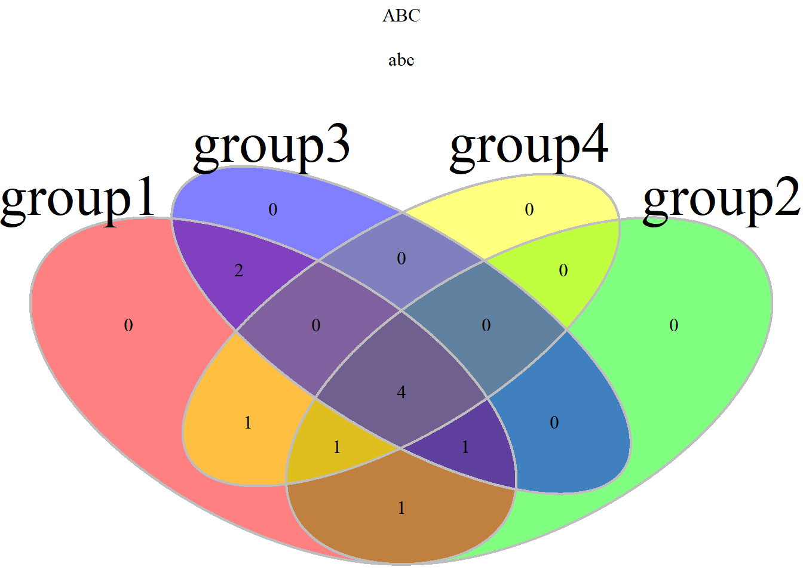

xiaoming
1
R语言、Rstudio、R包ggplot2安装 (win10)
1.1
R语言官网
1.2
Rstudio官网
2
绘图数据准备
2.1
读取数据
3
R语言ggplot2散点图
4
R语言ggplot2柱形图
4.1
最基本的柱形图需要准备的数据
Published with bookdown
R语言ggplot2科研数据可视化实用手册
Chapter 4
R语言ggplot2柱形图
4.1
最基本的柱形图需要准备的数据
一列x一列y
如果柱子垂直 x是离散型数据 y是连续型数据
如果想要水平的柱子，就把y设置成离散数据，x设置成连续数据

数据集
var1
var2
A
1
B
2
C
3
D
4
E
5